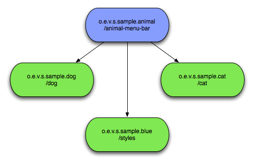

The Virgo Snaps Zip file comes with a sample application that you may have already deployed to verify your VS install. In this chapter you will look at it in more detail to see how an application can be composed and see all the Snaps features in action.
The application is very simple, it consists of just a front end, composed of four bundles, a host with three Snaps.

The host and three snaps show their Snap-ContextPaths. The Cat and Dog snaps both
contribute content while the final snap just contributes styling information in the form of css
files. The following sections look at each of these in detail.